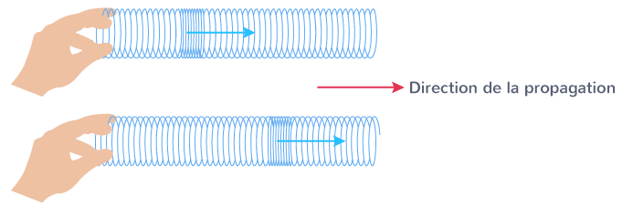
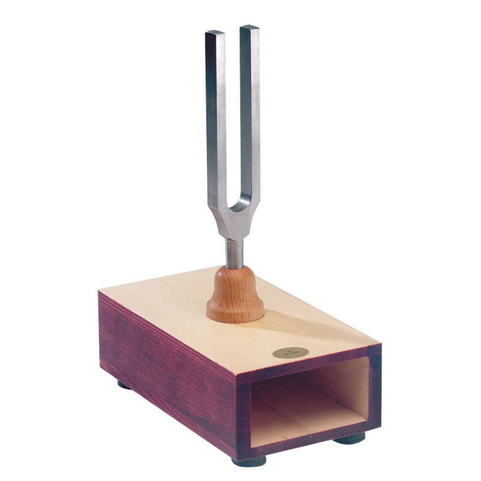

Un son est une onde mécanique
Un son est une perturbation mécanique qui se propage dans un milieu matériel sous forme d'onde de pression. Lorsqu'un objet vibre — une corde de guitare, les cordes vocales, une membrane de haut-parleur — il pousse et tire les molécules d'air autour de lui, créant alternativement des zones de compression (molécules rapprochées, pression élevée) et de raréfaction (molécules écartées, pression basse).
Ces variations de pression se propagent de proche en proche dans le milieu, comme des vagues sur l'eau — mais en trois dimensions. Ce n'est pas la matière elle-même qui se déplace, mais bien l'énergie de la perturbation.
Le son est une onde longitudinale : les molécules oscillent dans le même sens que la direction de propagation (contrairement aux vagues de l'eau, qui sont transversales).

Onde longitudinale — compression et raréfaction
Visualiser la compression et la raréfaction
Cette simulation montre le déplacement des molécules d'air lors du passage d'une onde sonore. La source est à gauche.
Comment le son voyage-t-il ?
L'onde sonore se propage de façon sphérique à partir de la source, en s'atténuant avec la distance. Observez ci-dessous la propagation en temps réel — choisissez le type d'onde et cliquez pour créer une source.
Loi de l'inverse des carrés
L'intensité sonore d'une source ponctuelle diminue proportionnellement au carré de la distance. Si vous doublez la distance par rapport à la source, l'intensité est divisée par 4 — soit une diminution de 6 dB. À 10 mètres, elle est 100 fois plus faible qu'à 1 mètre.
Onde plane vs sphérique
Près d'une grande surface vibrante (haut-parleur de grande taille, mur), l'onde peut être approximée comme plane — les fronts d'onde sont parallèles et l'atténuation est moins rapide. Loin de toute source, l'onde est toujours sphérique.

Diapason — source sonore de référence à 440 Hz
Longueur d'onde
La longueur d'onde (λ) est la distance entre deux compressions successives. Elle est liée à la fréquence (f) et à la vitesse du son (v) par la relation : λ = v / f.
Un son grave à 100 Hz a une longueur d'onde d'environ 3,4 m dans l'air. Un son aigu à 10 000 Hz a une longueur d'onde de 3,4 cm seulement — ce qui explique pourquoi les hautes fréquences sont plus facilement absorbées par les obstacles.
Le son dans l'air, l'eau, les solides…
La vitesse du son dépend entièrement du milieu dans lequel il se propage — de son élasticité et de sa densité. Plus un milieu est rigide et peu dense, plus le son y va vite.
Calculer & comparer
🌡️ Vitesse du son selon la température
La vitesse du son dans l'air dépend de la température. Faites glisser le curseur pour la calculer.
⚡ Son contre lumière — qui arrive le premier ?
Sur une distance de 10 km, visualisez l'écart colossal entre la vitesse du son et celle de la lumière.
Ce que les ondes sonores peuvent faire
En tant qu'onde, le son obéit à des lois physiques générales qui s'appliquent à toutes les ondes. Cliquez sur chaque phénomène pour le découvrir.